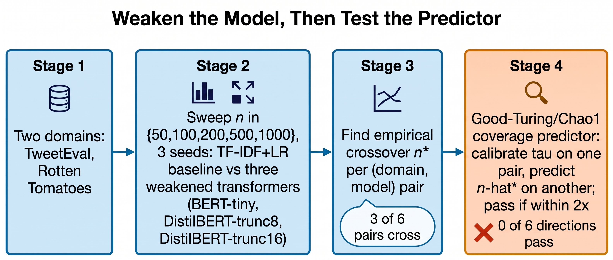

Small-data text classification
Weakening the Transformer Reveals a Crossover, but the Label-Free Predictor Still Cannot Find It
A prior experiment in this line of work found that a full-strength fine-tuned DistilBERT beat a TF-IDF baseline at every training size tested, on two sentiment datasets, leaving no crossover point for any cheap, label-light predictor to forecast. This paper deliberately weakens the transformer (short truncation, a much smaller pretrained checkpoint) and finds that a crossover does reappear, in three of six domain/model pairs. Given real crossovers to test against for the first time, the paper's own Good-Turing/Chao1 coverage predictor is run end to end in every calibrate-on-one, predict-on-another direction available — and it fails in all six of six, naming no usable crossover in five directions and getting the sign of the one computable correlation backwards.
Contributions
Weakening restores real crossovers
A multi-seed accuracy-versus-training-size sweep across three shrunken transformer variants (BERT-tiny, DistilBERT truncated to 8 tokens, DistilBERT truncated to 16 tokens) against TF-IDF+LR, on TweetEval and Rotten Tomatoes, surfaces three genuine crossovers where a full-strength transformer produced none.
The predictor tested end to end, for the first time
The Good-Turing/Chao1 label-light coverage predictor's calibrate-on-one-pair, predict-on-another test is run in all six available directions across the three crossover pairs, with an explicit finite-versus-vacuous accounting of every direction.
A power analysis of the check itself
A quantitative accounting of how little a rank-correlation check over three or four crossover points can actually detect, so this negative result and any future positive one are read at the right confidence.
A measured cost gap
DistilBERT fine-tuning costs 170–200× the CPU time of TF-IDF+LR at matched training size, framing why a label-light predictor would be worth having even in the scope where it might work.
A scoped novelty claim
A literature dossier checks the paper's claim against six candidate prior sources, replacing an unqualified "no prior work" sentence with one narrowed to what a targeted search actually supports.
Method

A prior experiment in this line of work trained a full-strength, standard DistilBERT against TF-IDF plus logistic regression at every size from n=50 up, on two sentiment datasets that share corpus lineage, and the transformer won every time. With no crossover anywhere in that sweep, there was nothing for a crossover-prediction method to be tested against. This paper changes exactly one thing: it deliberately weakens the transformer, in ways a resource-constrained practitioner might choose anyway, and keeps everything else the same.
- Input Two independent short-text sentiment domains, TweetEval and Rotten Tomatoes, each with a large unlabeled pool and a held-out test set fixed across every condition.
- Weaken the transformer Three variants of shrinking capacity are fine-tuned against the same TF-IDF+LR baseline: BERT-tiny (a 2-layer, 128-hidden encoder with a 32-token limit), DistilBERT truncated to its first 8 WordPiece tokens, and DistilBERT truncated to 16 tokens. All three use the same training recipe, with epoch counts tuned per training size so a weak-model disadvantage cannot be blamed on fixed-epoch undertraining.
- Sweep and define the crossover Each (domain, model) pair is trained at n in {50, 100, 200, 500, 1000}, over 3 seeds per cell. The accuracy gap (weakened transformer minus TF-IDF+LR) is tracked across the grid; a pair has an empirical crossover n* if the gap starts negative and turns non-negative and stays there, with n* the smallest such n. A pair whose gap never turns is excluded from every later step, not assigned a guessed value.
- Test the predictor The label-light predictor estimates n* from a small labeled pilot (n in {100, 200, 400}) plus the unlabeled pool, using a Good-Turing/Chao1 estimate of unseen vocabulary mass restricted to a mutual-information-selected subset. A calibration constant is fit on one (domain, model) pair with a known n* and applied to a different pair to produce a predicted n̂*; a direction passes if the prediction lands within a factor of 2 of the true n*.
- Output Three real crossover pairs to test against, all six calibrate/predict directions run across them, and a power analysis of what a check this small could ever have detected.
Results
Weakening restores the crossover
BERT-tiny never overtakes TF-IDF+LR on either domain: on TweetEval its gap runs from −0.053 at n=50 to −0.043 at n=1000, and on Rotten Tomatoes from −0.033 to −0.047. DistilBERT-trunc8 stays behind on TweetEval throughout but crosses on Rotten Tomatoes at n*=200. DistilBERT-trunc16 crosses on both domains: at n*=50 on Rotten Tomatoes (already ahead at the smallest size tested) and at n*=500 on TweetEval.
| Domain | Model variant | n=50 | n=100 | n=200 | n=500 | n=1000 | Empirical n* |
|---|---|---|---|---|---|---|---|
| TweetEval | BERT-tiny | −0.053 | −0.112 | −0.131 | −0.092 | −0.043 | none |
| TweetEval | DistilBERT-trunc8 | −0.059 | −0.108 | −0.036 | −0.049 | −0.039 | none |
| TweetEval | DistilBERT-trunc16 | +0.009 | +0.016 | +0.015 | +0.073 | +0.069 | 500 |
| Rotten Tomatoes | BERT-tiny | −0.033 | −0.038 | −0.050 | −0.038 | −0.047 | none |
| Rotten Tomatoes | DistilBERT-trunc8 | +0.007 | +0.005 | +0.030 | +0.027 | +0.016 | 200 |
| Rotten Tomatoes | DistilBERT-trunc16 | +0.052 | +0.091 | +0.086 | +0.083 | +0.076 | 50 |
The predictor fails in all six directions
In five of the six directions the predictor's coverage-curve fit produces no finite candidate crossover at all, and the fitted calibration constant is estimated at 0.0 in every direction. The one direction where a rank correlation is even computable runs the wrong sign: Spearman ρ = −0.866 (n=3, p=0.333, not significant). No direction lands within a factor of 2 of its true target.
| Calibrate on | Predict on | True n* | n̂* | τ | Spearman ρ | Within 2×? |
|---|---|---|---|---|---|---|
| TweetEval / trunc16 | Rotten Tomatoes / trunc8 | 200 | null | 0.0 | — | No |
| TweetEval / trunc16 | Rotten Tomatoes / trunc16 | 50 | null | 0.0 | — | No |
| Rotten Tomatoes / trunc8 | TweetEval / trunc16 | 500 | null | 0.0 | −0.866 (p=0.333) | No |
| Rotten Tomatoes / trunc8 | Rotten Tomatoes / trunc16 | 50 | null | 0.0 | — | No |
| Rotten Tomatoes / trunc16 | TweetEval / trunc16 | 500 | null | 0.0 | −0.866 (p=0.333) | No |
| Rotten Tomatoes / trunc16 | Rotten Tomatoes / trunc8 | 200 | null | 0.0 | — | No |
Cost accounting
DistilBERT fine-tuning costs between 174× and 197× the CPU time of TF-IDF+LR at matched n, and the accuracy gap it buys ranges from 15.9 to 22.8 percentage points, which would require TF-IDF to be trained on an extrapolated 1,549 to 3,513 additional labeled examples to close by adding data alone. These figures are from the prior companion experiment's full-strength DistilBERT-versus-TF-IDF measurements on Rotten Tomatoes and SST-2.
| n | TF-IDF+LR CPU (est.) | DistilBERT CPU (measured) | Cost ratio | Accuracy gap (pp) | Extra labels for TF-IDF to match |
|---|---|---|---|---|---|
| 50 | 0.15s | 26.1s | 174× | 15.9 | 1,549 |
| 200 | 0.45s | 88.5s | 197× | 22.8 | 3,217 |
| 500 | 1.05s | 205.5s | 196× | 21.1 | 3,482 |
| 1000 | 2.05s | 367.5s | 179× | 17.8 | 3,513 |
How much should the negative result move a reader's belief?
A companion power analysis of the analogous four-point rank-correlation check run on the prior full-DistilBERT experiment found that, at n=4, the test could only detect |ρ| ≥ 0.993 at 80% power, and the achieved power at the correlations actually observed there (ρ=0.105 and ρ=−0.200) was 0.032 and 0.039. The calibrate/predict scorecard here rests on an even sparser base: three crossover pairs, a correlation computable in only one of six directions from three points. A ρ=−0.866 from n=3 is consistent with pure noise (p=0.333) and would stay non-significant at any n this small regardless of the true relationship. The honest reading of Table 2 is "no evidence of a usable signal, at a sample size too small to have detected a moderate one even if it existed," not "definitively refuted."
Figure gallery
Limitations
- The training-size grid was capped at n=1000 rather than the originally planned n=2000, and seed count was reduced from 5 to 3 per cell, both compute-budget degradations under CPU-only hardware, not silent shortcuts.
- A full-strength DistilBERT reference arm was dropped from this sweep entirely, since establishing that no crossover exists at full strength was already answered by the prior companion experiment.
- Three seeds per cell is enough to see the qualitative crossover pattern but not enough to place tight confidence intervals on individual gap values.
- The calibrate/predict scorecard's small base rate, three crossover pairs and six directions, is too underpowered to distinguish "the predictor carries no signal" from "the predictor carries a weak signal this experiment could not detect."
- Both domains are short-text sentiment classification. Whether the pattern found here generalizes to longer documents, non-English text, or multi-class labels is untested.
- The literature dossier behind the novelty scoping is a targeted rather than exhaustive search: English-only, general web search, roughly eighty snippets across eight query formulations, no separate scholarly-API layer. A dedicated ACL Anthology or Semantic Scholar search could still surface additional comparisons or predictors this search missed.